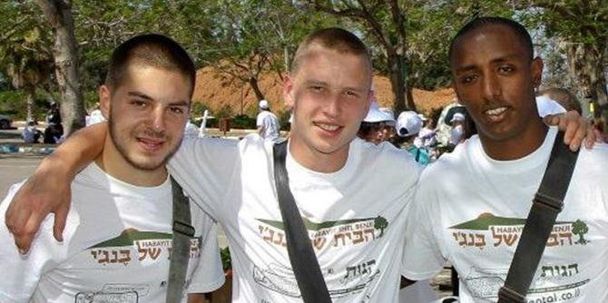
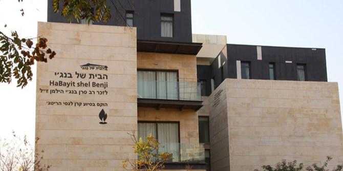
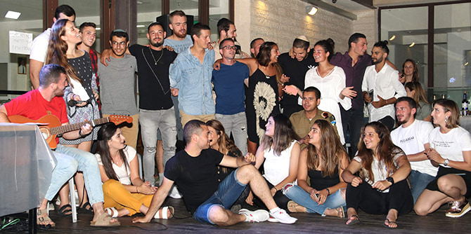

Photo: Courtesy of Habayit Shel Benji
Some 1,250 lone combat soldiers serve in the IDF. Many come from overseas, while others cannot be supported by their families in Israel. Habayit Shel Benji (Benji's House) was established to ensure that soldiers, who risk their lives every day to protect Israel from harm, do not come home from a grueling week of military service to an empty house, with laundry to wash, no food in the refrigerator, and bills they cannot afford to pay.
Since its establishment in 2013, Habayit Shel Benji has been home to 360 lone soldiers. Built in memory of Benji Hillman, a British-born company commander who was killed in the Second Lebanon War, Habayit Shel Benji continues Hillman's legacy of caring for lone soldiers. Located in Ra'anana, it provides lone combat soldiers with support for challenges they encounter and needs that arise during and after their service in the IDF.
Photo: Courtesy of Habayit Shel Benji
Currently, Habayit Shel Benji houses 87 lone soldiers, providing them with three meals a day, clean laundry, space for themselves, expert guidance, and the 24/7 support of a “family.” This is accomplished through the efforts of the home's devoted staff and a network of volunteers from the community. The home also provides guidance to lone soldiers in transitioning into civilian life after their military service. To date, it has helped over 2,000 lone soldiers find employment, apartments, furnishings, and scholarships following their service.
COVID-19 changed everything for Habayit Shel Benji. Suddenly, the home found itself dealing with issues it had never confronted before. The soldiers who live there were more vulnerable both physically and emotionally, and the organization’s financial support system started to show cracks. The repeated lockdowns had an impact on the goods that were donated to the home and shut out the volunteers who contribute their time to the home.

Lone soldiers at Habayit Shel Benji (Courtesy of Habayit Shel Benji)
As part of the Mandel Foundation's response to the coronavirus crisis in Israel, Habayit Shel Benji received two grants that enabled it to continue supporting its lone soldiers throughout the COVID-19 pandemic. When the large monthly food donations that help feed the soldiers stopped arriving during the lockdown, the Mandel Foundation's financial support enabled the home to purchase food for soldiers who were able to return to their apartments and to make care packages for soldiers who were stuck on base for months on end.
Funding from the Mandel Foundation also helped Habayit Shel Benji compensate for the fact that most of its volunteers were not able to come during the lockdown, which affected the home's ongoing staffing. The funds allowed the home to employ an extra staff member to cover night shifts, which included managing the front desk, supervising the kitchen, and remaining on-call throughout the night in case a soldier needed urgent help. The grants also enabled the home to purchase medical supplies, including masks, disinfectants, and thermometers, and to run mini-events on weekends, when soldiers came home from the army but had nothing to do because entertainment venues were all closed.
The Mandel Foundation grants thus played a vital role in helping Habayit Shel Benji, which is currently building a second home for lone soldiers adjacent to the first, to withstand the unique challenges of the COVID-19 crisis. Saul Rurka, CEO and Founder of the home, expressed his gratitude for the Foundation's support in 2020 and 2021, saying: "Lone combat soldiers have given their lives to help the country; the least we can do is offer them a proper home and a loving family. We are grateful to the Mandel Foundation for helping us to be there for our soldiers at a time when they needed us most."
{kind=link}
{kind=link}
{kind=link}